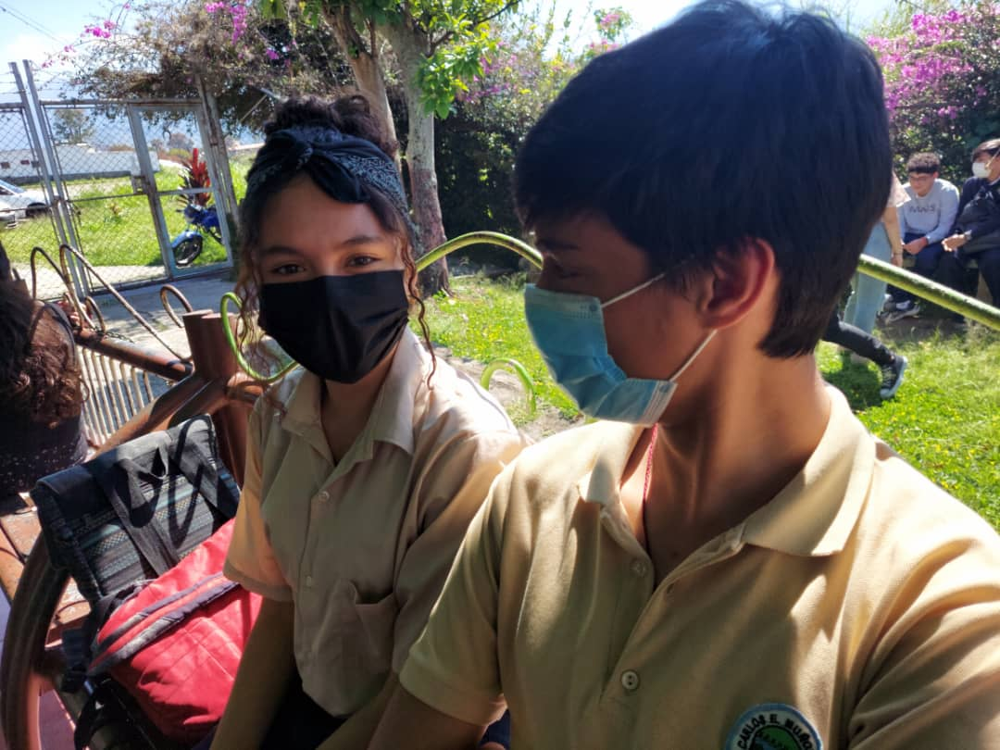
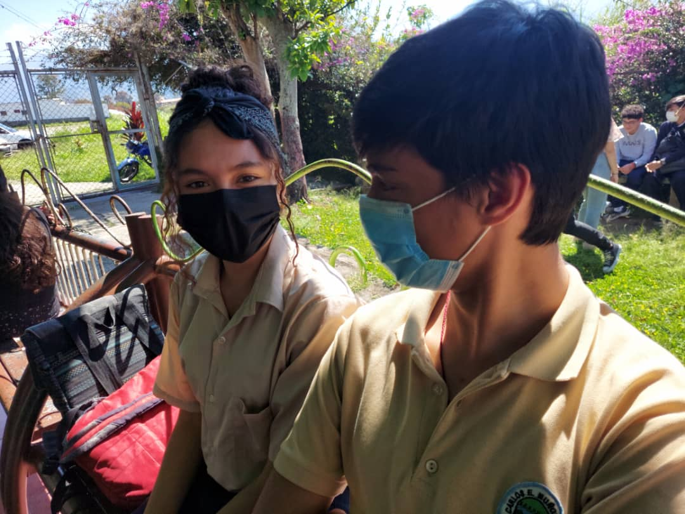

💕 TODO LO QUE PASÓ ESE MES (ABRIL-MAYO) 💕
¿Recuerdas todo?... ¿Recuerdas como inició todo?... A pesar de que iniciamos
a hablar unos pocos meses antes de nuestro noviazgo, cuando de verdad empezamos a
hablar fué en febrero, aunque pasé todo el mes enfermo estuviste ayudándome con
lo que mandaban en el colegio y me acompañabas "virtualmente" en las tardes, todos
los juegos de preguntas y tus creencias de que eras una "detective", muy tonta por
cierto, ya que no descubriste que yo te estaba llevando por el camino que yo querÃa,
y pocos dÃas después supiste que era un DIOS y además especializado en el engaño y
poco a poco en ganarme tu corazón.
Y en Abril... se podrÃa decir que hubo una... Mentira En Abril... Si estuvieramos en
un sitio donde hay estaciones, serÃa una primavera, una primavera contigo mi pequeña
y hermosa metirosa, aquel 13, nuestra primera cita siempre será la mejor y la más hermosa por
muchas cosas, entre esas... Que supe que mi poder y voluntad pudo ganar tu corazón,
los postres, los bombones y tus besos, en particular tus besos fueron los más dulces,
pasar la tarde contigo... mi primera tarde junto a ti fué lo mejor que pude sentir,
nuevas sensaciones y... 16 dÃas después... Por fin tuve lo que más aprecio. TU AMOR.
O
 
